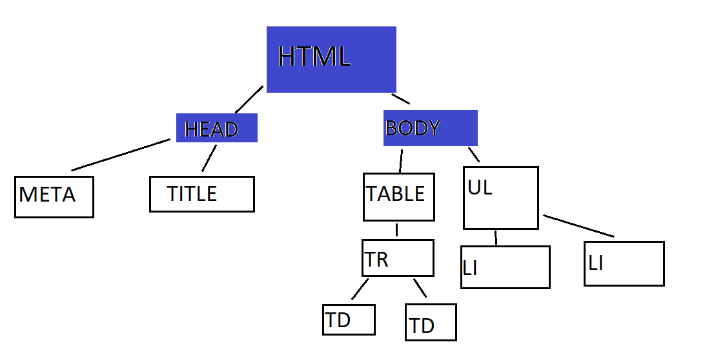

kaskadowość arkuszy stylów określa kolejność oddziaływania stylu zależnie od metody dołączenia jego kodu do formatowanego dokumentu HTML
Dlatego style o wyższym priorytecie ważności mają pierwszeństwo w modyfikowaniu elementów dokumentu HTML.
Style o nizszym priorytecie mogą zmienić formatowanie jakiegoś elementu tylko wtedy, jeżeli style o wyższym priorytecie nie definiują tego elementu.
Dzięki temu można pracować z różnymi metodami tworzenia arkuszy stylów bez obawy, że będzie to powodować błędy formatowania na stronie.
Struktura każdego dokumentu hipertekstowego opiera się na hierarchichnej budowie drzewa dokumentu.
Można to porównać do zależności występujących w hierarchii społecznej. Każdy element w drzewie dokumentu ma dokładnie jednego rodzica, oprócz elementu głównego, czyli korzenia drzewa, którym jest zawsze element HTML.
